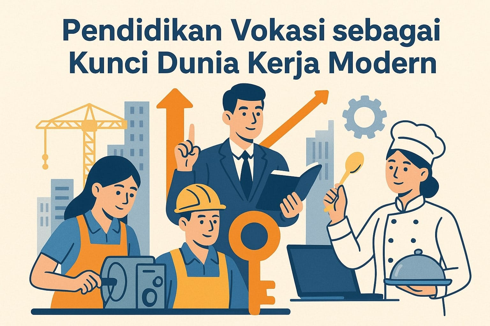

Media Interaktif Penguatan Karakter dan Etos Kerja
Bangun Karakter & Etos Kerja yang Kuat
Menjadi insan vokasi bukan cuma soal keterampilan teknis, tapi juga soal karakter dan tanggung jawab.
Yuk asah semangat kerja, disiplin, dan integritasmu lewat media interaktif ini!

“Etos kerja tinggi adalah fondasi keberhasilan seorang vokasi sejati.”